The first day's outing was all driving and I would see nothing, leaving Badajoz for the next day. Badajoz is the capital of the province and the most populated city in the entire autonomous community, however, despite being a city with a large monumental load, it is little known because other nearby cities and towns such as Mérida, Cáceres or Trujillo have much more monuments from different eras.
Badajoz stands out above all for its remains from the Islamic period, such as the great wall around the old Alcazaba. In Arabic it was called Batalyaws and it was founded by Abd-al Rahman Ibn Marwan, in the year 875, reigning the Cordovan emir Muhammad I, over a previous Visigothic settlement. It was built on the hill of La Muela and covered a large space.
The Alcazaba of Badajoz (from Arabic: al-qaṣbah, قصبة, al kasbah, 'citadel') is a Muslim fortification (9th-13th centuries), a late-medieval Christian castle (13th-16th centuries) and as part of the citadel and fortification of modern construction (XVII-XIX centuries), located in the Spanish city of Badajoz. On it you can see a large part of the city as seen in the image, which in this case faces the square of the hermitage, southwest direction.
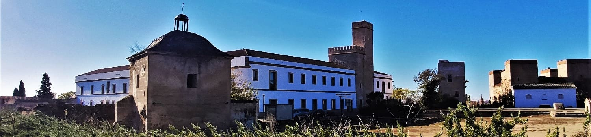
The citadel-castle of Badajoz is the largest citadel in Europe, (in terms of its construction from the Muslim period), and one of the largest in the world in its genre and period, in terms of its perimeter is referred to (8 hectares and some 1300 meters of preserved wall canvas), although its extension became much greater with the so-called "Old Fence" (of which important vestiges still survive), which approximately includes the entire enclosure bastion of later construction, with dimensions of 6000 meters and more than 50 hectares, which make it one of the largest among those built by the Arabs in the past (along with cities like Granada). It has about 12 towers, some of them more recent, ranging from the 9th to the 12th century, the most important being that of Espantaperros from the 12th century from the Almohad era with an octagonal floor plan.
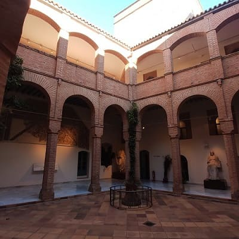
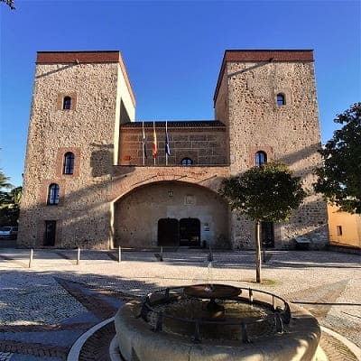
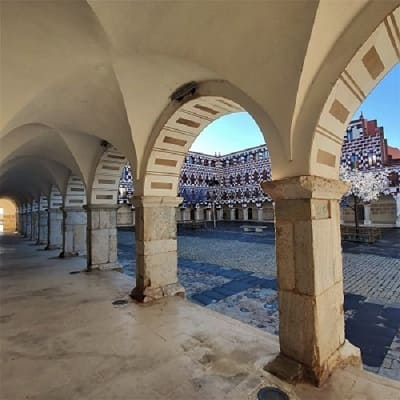
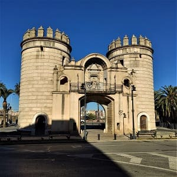
The enclosure houses the Provincial Archaeological Museum in the Palace of the Dukes of the Rock, which can be seen in the two images above. The buildings shown inside are good proof of the different functions that the enclosure had at different times: Islamic citadel (9th-13th centuries), Christian late-medieval castle (13th-16th centuries) and as part of the citadel and fortification of modern building (XVII-XIX centuries). The Museum stands out for its Roman and Visigothic remains.
Inside there is a church that was formerly the Cathedral of Badajoz called Cathedral of Nuestra Señora del Obispal or Santa María del Castillo. Together with some archaeological remains, it is what remains of the primitive Badajoz Cathedral (Mosque-Cathedral), erected on top of an old Arab mosque after the Christian conquest of 1230.
In addition, due to its proximity to Portugal, bastions (see map of the city) and external walls were built like its neighbors Olivenza and Elvas. With its corresponding gates in its walls, Palmas Gate stands out and has been preserved until today, next to the bridge of the same name.
As places of interest we could highlight some squares such as the Plaza Alta where the red houses are, an old square with restored houses that give a modern touch to that area. In the image above you can see the square.
Another square is Plaza de España where the town hall and the cathedral are in the image below. This cathedral would be built due to the importance of the city in the 13th century after the reconquest. It would be built on a Mozarabic temple that was outside the city. Everything that was not close to the Alcazaba was on the outskirts and the city was not even a quarter larger than it is today.
The Cathedral of San Juan Bautista has the external appearance of a castle or fortress with very large walls. Inside the Badajoz Cathedral we can see three naves and as many apses, highlighting its High Altar, its numerous chapels and above all its cloister with its pointed arches, which was built in the 16th century. It is worth more than other cathedrals in the south, although it is a very modest cathedral, and except for the fact that it combines everything architecturally to be a cathedral, it could well be a co-cathedral or collegiate church. Remember that Extremadura has 3 cathedrals, Badajoz, Coria and Plasencia and 2 large monasteries, world heritage sites, such as Yuste and Guadalupe. I had already seen all these places on previous trips and I only had this one left.
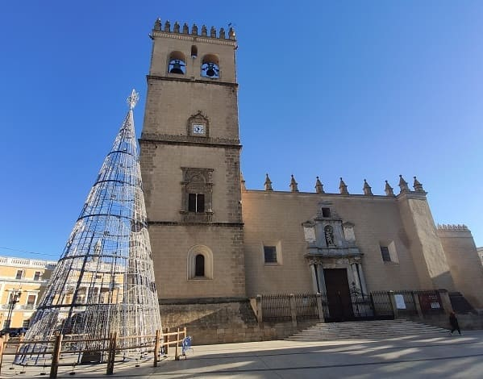
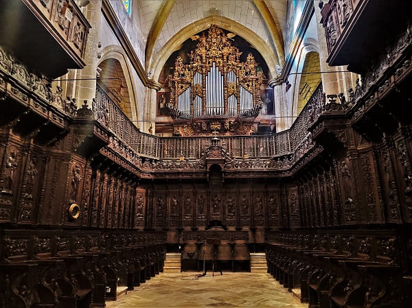
It also preserves old doors such as the one in Las Palmas and religious buildings of interest such as the Convent of San Jose and the one of Santa Ana that can be seen in the image in front of the Badajoz music conservatory. It also has significant modernist buildings such as the Jiralda building, a tall neoclassical building.
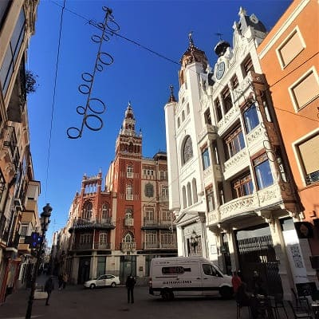
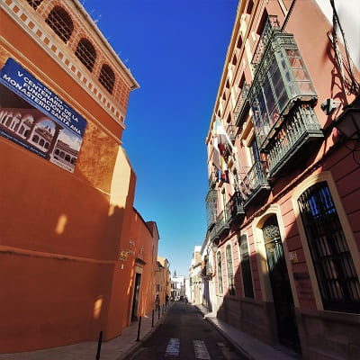
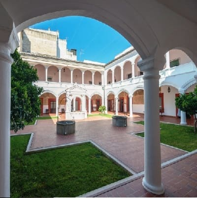
The last important square is Plaza de San Francisco with the church of San Juan Bautista and the church of Santo Domingo nearby, as well as the López Ayala theater, which are shown in the image.

 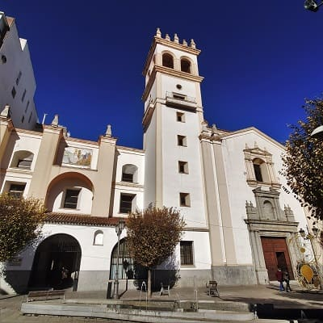
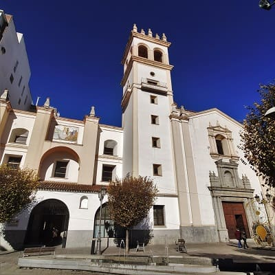

© 2016 - All Rights Reserved - Designed by Sergio López Martínez
El sitio se mantiene gracias a la publicidad, por favor Desactiva Adblock para seguir navegando
He desactivado Adblock![[Valid RSS]](https://www.onepointsync.com/wp-content/uploads/2016/08/valid-rss-rogers.png "Validate my RSS feed")